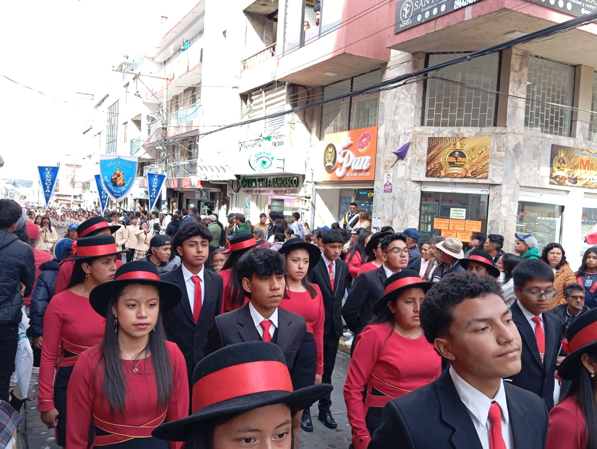
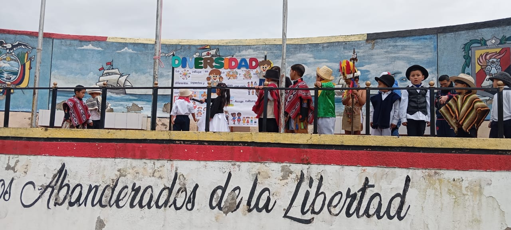
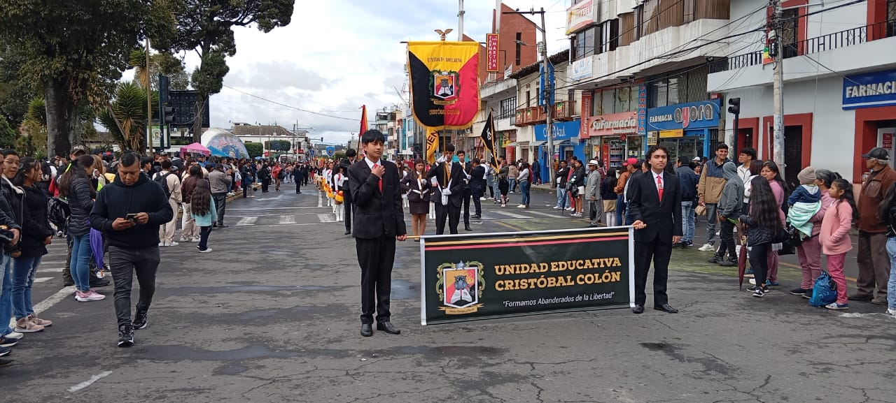

Galería Institucional




Somos una institución Educativa, que brinda una educación integral e inclusiva de calidad y calidez, con profesionales en constante capacitación que orientan a nuestros niños y jóvenes, a través de la investigación, la tecnología, innovación y deporte para ser constructores de sus propios aprendizajes significativos, con principios, valores éticos, morales, respetuosos del espacio natural, entregando a la sociedad seres humanos que buscan la sana convivencia y el compromiso en el desarrollo y mejoramiento de su proyecto de vida.
La unidad educativa “Cristóbal Colón”, será en el año 2028 una institución con niveles de excelencia académica en Educación Inicial, Educación General Básica, Bachillerato Técnico en Informática; una institución líder en formar seres humanos con actitud positiva, íntegra, crítica, innovadora y competente, pioneros en el uso de la tecnología en el proceso de enseñanza aprendizaje, involucrados con responsabilidad mediante procesos claramente definidos en la investigación, tecnología, innovación, deporte que satisfagan una educación integral centrada en el sujeto que será capaz de generar soluciones a sus conflictos y convivir en un clima de paz.